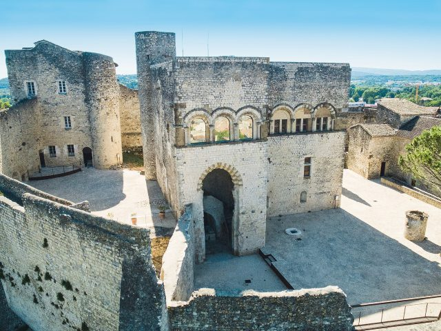

Située entre Avignon et Valence, Montélimar est mondialement connue pour son nougat. À environ 45 minutes des Cabritas, c'est aussi une porte d'entrée agréable vers la Drôme provençale.

Le Château des Adhémar, joyau roman provençal
Perché sur les hauteurs de la ville et accessible en quelques minutes à pied depuis le centre, le Château des Adhémar, bâti au XIIe siècle, est un bel exemple d'architecture romane provençale. Il abrite aujourd'hui un centre d'art contemporain reconnu à l'échelle régionale.
La ville du nougat
Plusieurs fabriques artisanales perpétuent la tradition du nougat en plein centre-ville, certaines proposant des visites gratuites de leur atelier de fabrication, notamment le long des célèbres allées provençales. L'occasion de découvrir le savoir-faire local et de repartir avec quelques douceurs.
Bon à savoir avant votre visite
Le centre historique et commerçant, entièrement piéton, se reconnaît à ses façades aux couleurs du sud : maison Diane de Poitiers, hôtel du Puy Montbrun, hôtel de Chabrillan, collégiale Sainte-Croix et porte Saint-Martin valent le coup d'œil. Le samedi matin, un marché animé prend place place des Clercs, entourée de ses arcades et de ses cafés.
Infos pratiques depuis Les Cabritas
- Distance depuis Flaviac : environ 45 min de route
- Meilleure période : toute l'année, marché le samedi matin
- Idéal pour : gourmandise, patrimoine, balade en ville
Envie de découvrir Montélimar depuis votre gîte en Ardèche ?
Les Cabritas vous accueillent à Flaviac, au cœur de l'Ardèche, pour un séjour confortable avec piscine privée, à deux pas des plus beaux sites de la région.
Vérifier les disponibilités